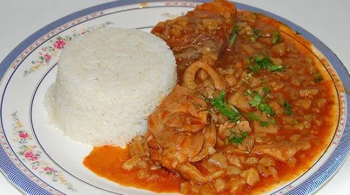

Carapulcra
Ingredientes
½ kilogramo de Papa seca
½ kilogramo de Carne de chancho
1 Cebolla grande picada en cuadritos
3 cucharas de Ají panca
1 ½ cuchara de Ajos molidos
Caldo de pollo
150 gramos de Maní molido
50 gramos de Galletas molidas
Yuca sancochada, Aceite y 1 pizca de Sal
Preparacion
Paso 1 : Escoger y cernir la papa seca para verificar que no tenga piedritas. Luego, en una sartén caliente dorar de a pocos la papa seca e ir echándola en un recipiente con agua para hidratarla.
Paso 2 : Una vez hidratada (que se haya hinchado), enjuagarla bien y dejarla escurrir. Ahora, en una olla freír en aceite muy caliente la carne cortada en trozos y condimentada con 1/2 cda. de ajos y sal. Reservar.
Paso 3 : En la misma olla freír muy bien la cebolla, agregar luego el ají panca, dorar muy bien, adicionar los ajos, revolver para integrar bien los ingredientes y finalmente vierta la papa seca e ir agregando el caldo según vaya espesando hasta que este casi cocinado, entonces mezclar con la carne que se había reservado, dejar dar un hervor y servir con yuca. 